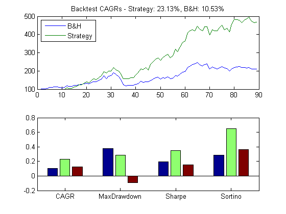
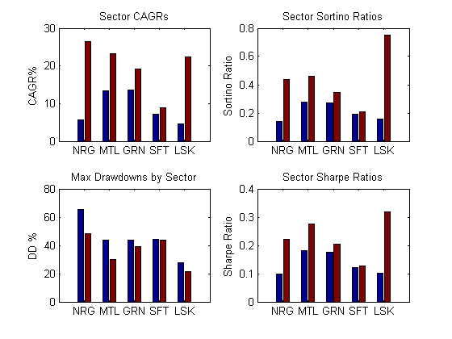

Commodities Trading with MATLAB - Backtesting with varying parameters
It is often a good idea to verify the performance of a backtested trading strategy with a chunk of market data that it has previously not been tested on. At the beginning of this webinar, we had split our data into two: a training set, and a test set. In this script, we first test our strategy's performance on the test set of data (commodity data ranging from January 2006 to May 2013), after which we test our strategy on the combined set of data (training set and test set). We generate relative performance plots as before, comparing the CAGR, Sortino ratio, Sharpe ratio and maximum drawdowns for our momentum catch-up strategy versus a buy and hold strategy.
Contents
1. Backtest with varying parameters
In this section, we test our strategy's performance with a test set of commodity data (Jan 2006 - May 2013).
clc;clear;
load('StageA');
cmd = CommodityMetadata;
lookbackWindow = 9;
indicatorFcn = @IndicatorSMADiff;
selectedContainer = TestSetMonthly;
ComputeCatchupStrategyAndPlot;
 2. Generate relative performance plots
This section generates relative performance plots comparing our strategy with a buy and hold strategy.
figure; cmdTypes=CmdTypesShort; h=subplot(2,2,1); % CAGR PlotPerf(h,cmdTypes,cagrSet*100,'CAGR%','Sector CAGRs'); h=subplot(2,2,2); % Sortino PlotPerf(h,cmdTypes,sortinoSet,'Sortino Ratio',... 'Sector Sortino Ratios'); h=subplot(2,2,3); % Drawdowns PlotPerf(h,cmdTypes,drawdownSet*100,'DD %',... 'Max Drawdowns by Sector'); h=subplot(2,2,4); % Sharpe PlotPerf(h,cmdTypes,sharpeSet,'Sharpe Ratio',... 'Sector Sharpe Ratios'); hold off;